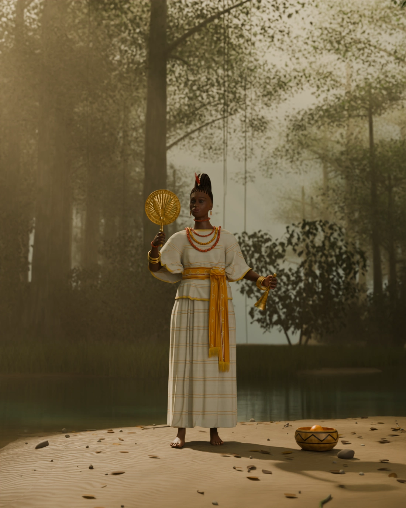
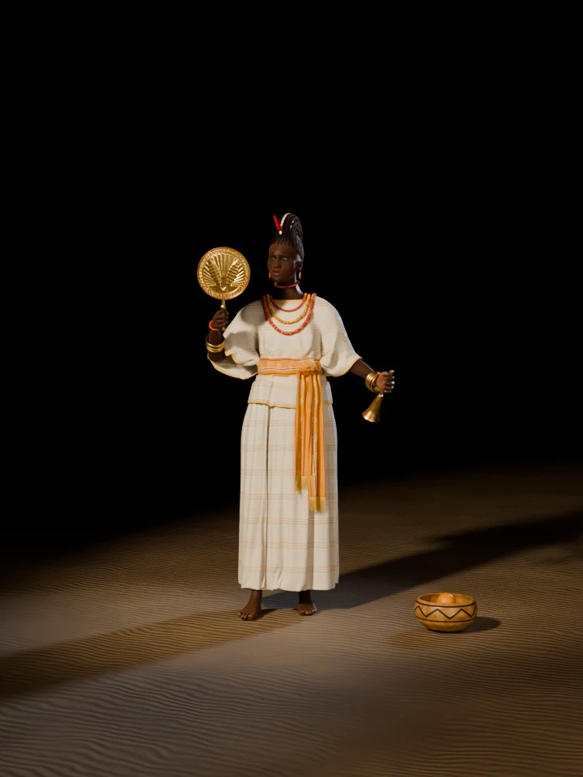

Yorùbá òrìṣà of the river, love, beauty and wealth
A photoreal study of the river òrìṣà on a morning in her grove: white ìró and bùbá, a gold sash, the Àgògo braids of her initiates, coral and amber, and a brass fan raised beside her as her priestesses carry it along the river.

Drag across the figure, use the slider, or focus it and press the arrow keys. Thirty-six views, ten degrees apart, rendered under the same lights as the figure turns.

Loading views 0 / 36
The fan raised on her right, the bell held out on her left, and the sash knotted over her left hip.
The brass fan seen edge on, the sleeve falling from the raised arm, and the crest in full profile.
The Àgògo from behind: rows climbing from the nape into the rings of the crest, white along its rim.
The bell, the two tails of the sash and the calabash of oranges.
Select a picture to see it at full size.
Imagined · the sources do not describe her
Beauty is one of her domains, so she is drawn as a graceful woman of about thirty, with a calm face. Along her lash line is tìróò, the Yorùbá eye cosmetic. What she wears follows her priestesses and devotees at Òṣogbo, which is as near as the sources come to showing her.
Sources: Wikipedia: Oshun, Ojo and Boluwatife (2025)
Cockscomb · initiates and priestesses
A style made to imitate a cockscomb, and the exclusive preserve of Ọ̀ṣun initiates and priestesses. Akintunde Akinleye’s photographs from the 2014 festival show rows rising into rings of braid, and hair adorned with ìkódẹ, the red feather. Here each braid is three strands crossing, each strand a bundle of hair curves.
Sources: Adunni Olorisha Trust: Àgògo 1, Àgògo 6, Oriire, Pulse
Brass fan · 35.6 × 22.2 cm
Her priestesses carry brass fans in processions along the banks of the river. She relieves anxiety, the High Museum says, as a fan cools the body. The size, the coiled rim and the ribs follow the museum’s fan; its two birds become two fish here, as on her gallery figure.
Source: High Museum of Art: Fan for Osun
Brass bell · rung in prayer
Devotees use a brass or bronze bell called ààjà when offering prayers to her. The Adunni Olorisha Trust calls the bell-like Aja-Osun a ubiquitous accessory of her worship. The shape of this one is the study’s own.
Sources: Zikoko, Adunni Olorisha Trust
Beads · 294 in all
Wikipedia gives coral among her colours and amber among her objects. The choker follows the Àrẹ́mọ́rùn that goes with the Àgògo, though the sources do not give its colours.
Sources: Wikipedia: Oshun, Adunni Olorisha Trust
White cloth · gold sash
Her priests and priestesses wear white in her honour. The ìró is one wrapper, the bùbá a loose blouse. The white aṣọ-òkè strips, their gold lines and the sash are the study’s reading of those two facts and her colours.
Sources: Zikoko, Wikipedia: Yoruba women’s clothing
Offering · gourd, fruit
Wikipedia lists orange among her objects and offerings, and there are five here, her number. The calabash is set down where the river is near, and its burned pattern is the study’s own.
Source: Wikipedia: Oshun
Sand · leaves · morning
The grove is one of the last remnants of primary high forest in southern Nigeria, with the river meandering through it. This bend of it is invented.
Source: UNESCO: Osun-Osogbo Sacred Grove
Ọ̀ṣun is worshipped at a living shrine, and none of the sources used here describes how she looks. What she wears here comes from her priestesses and devotees at Òṣogbo, so this figure is an interpretation, not a cult image. This list keeps the two apart.
The body starts from MakeHuman’s free base mesh, shaped younger and softer than Ahiajoku’s and rigged. Each arm was solved to its object, and each finger closed at all three joints at once, as a real finger does, until it came to rest on the handle.
The ìró is one cloth wound round the hips. The bùbá is cut from the body with its hollows bridged, then simulated as the arms come into place. While it settles, the waist is drawn in and lifted, so the gathers above and below the sash form on their own, and the tied sash then presses the pouched cloth flat under it.
The Àgògo is built braid by braid: cornrows projected onto the scalp from the hairline to the crest, and rings of thicker braid running round the crest itself. The fan’s relief is one height map, modelled as a single sheet of brass.
Every stage is a Python script in 3d/osun/blender/, using the toolkit in 3d/toolkit/, and the finished scene is 3d/osun/osun.blend.
| Wrapper cloth, simulated vertices | 27,848 |
|---|---|
| Bùbá cloth, simulated vertices | 32,772 |
| Simulated frames, wrapper / bùbá | 110 / 150 |
| Body mesh vertices, before smoothing | 13,380 |
| Cornrows and rings of braid | 31 / 13 |
| Hair curves in the braids | 2,688 |
| Points along those curves | 358,080 |
| Barbs on the two feathers | 600 |
| Cowries on the crest | 19 |
| Beads of coral and amber | 294 |
| Brass bangles | 12 |
| Trees, shrubs and reed beds in the grove | 280 / 420 / 240 |
| Samples per pixel, stills / turntable | 96 / 32 |